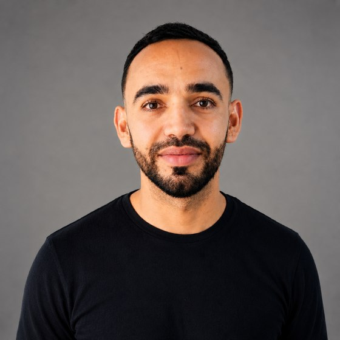
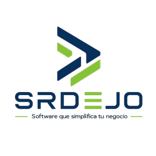

Daniel Eduardo
Jiménez Ovallos
Más de 12 años en tecnología y más de 3 años liderando la arquitectura de soluciones en producción en banca y fintech. Diseño microservicios, monolitos modulares y sistemas orientados a eventos en Java/Spring Boot sobre AWS, con arquitectura limpia y hexagonal.

SOBRE MÍ
Soy Ingeniero de Sistemas y Especialista en Auditoría de Sistemas, con más de 12 años en tecnología y más de 3 años liderando la arquitectura de soluciones en producción en banca y fintech.
Diseño arquitecturas de microservicios, monolitos modulares y sistemas orientados a eventos en Java/Spring Boot sobre AWS, aplicando arquitectura limpia y hexagonal. Defino requisitos no funcionales de disponibilidad, escalabilidad y rendimiento, y diseño patrones de integración seguros con cores bancarios, proveedores externos y dispositivos transaccionales, respondiendo por los controles de seguridad (OAuth 2.0/OIDC, OWASP Top 10) y la calidad verificable del código.
EXPERIENCIA PROFESIONAL

- Llevé MOUV, plataforma de pagos y recaudos, a producción con arquitectura de microservicios en Java y Spring Boot sobre AWS (ECS, Cognito para autenticación), con infraestructura reproducible en Terraform.
- Evalué el esquema de cifrado propio de un proveedor de pagos y diseñé el patrón de integración como componente reutilizable, hoy consumido por varios microservicios de la plataforma.
- Procesamiento asíncrono de eventos con AWS SQS (EDA) y modelado de datos en PostgreSQL.

- Arquitecto de la plataforma de tarjeta de crédito (Java/Spring Boot y Angular/TypeScript) y líder técnico de 4 personas, respondiendo por las decisiones de arquitectura del producto en producción.
- Rediseñé el patrón de integración con el core bancario Mambu, resolviendo los defectos de sincronización que afectaban la consistencia de las tarjetas.
- Eliminé los timeouts recurrentes del sistema paralelizando llamadas con CompletableFuture, mejorando el rendimiento y reduciendo de forma sostenida los bugs en producción.
- Diseñé y entregué integraciones bancarias REST y SOAP en Java 11/17 para Colombia, México y Canadá, con controles OWASP Top 10 y calidad verificada en SonarQube y JUnit.
- Rediseñé el flujo de autenticación por OTP: tiempos de vencimiento claros al usuario final sin debilitar el control de seguridad.
- Documenté y sustenté la puesta en marcha ante los equipos de México, que desplegaron sin acompañamiento presencial.
- Lideré a 3 desarrolladores en la construcción de Polaris Cloud, plataforma de microservicios vendida al banco BCP, definiendo la comunicación con dispositivos POS bajo el estándar ISO 8583.

- Llevé a producción la aplicación financiera que hoy usan más de 1.000 asociados, con transacciones auditadas contra OWASP Top 10 por auditores externos.
- Construí aplicaciones con GeneXus (low-code) y APIs con Java y Spring Boot, modelando datos en PostgreSQL.
Experiencia adicional
HABILIDADES TÉCNICAS
HERRAMIENTAS
PROYECTOS PROPIOS Y DESARROLLO ASISTIDO POR IA
Construí esta app para presupuestar, controlar gastos, administrar créditos y calcular el diezmo — de punta a punta, aplicando Specification-Driven Development desde el diseño hasta el desarrollo.
 Escanea para descargar
Escanea para descargarUna app de escritorio que carga el catálogo de un proveedor, lee automáticamente todos los productos y me permite seleccionar y ajustar precios para generar el catálogo final que envío a mis clientes.
github.com/srdejo/catalog-studio
Iniciativa propia de software bajo la que desarrollo mis productos. Llevo 10 proyectos en paralelo con Claude Code: defino las especificaciones y la arquitectura de cada uno y reviso el código generado antes de integrarlo.
FORMACIÓN
CERTIFICACIONES
- Curso de OpenClawAprobado el 10 de agosto, 2026
- Curso de Node.js: Autenticación, Microservicios y RedisAprobado el 20 de mayo, 2026
- Curso Profesional de Arquitectura de SoftwareAprobado el 1 de agosto, 2024
- Curso de Arquitecturas Limpias para Desarrollo de SoftwareAprobado el 21 de junio, 2023
- Fundamentos de Arquitectura de Software (2018)Aprobado el 25 de mayo, 2023
- Frontend a Profundidad con AngularAprobado el 9 de septiembre, 2021
- Desarrollo Backend con JavaAprobado el 26 de julio, 2021